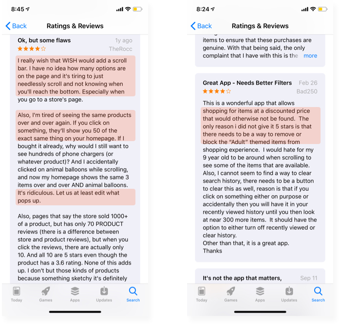

A rebranding and web redesign project for Rise
As a B2C startup at an early stage, Rise is a small yet growing modern flexible work platform that connects millennial female professionals to flexible, remote, and distributed jobs in the US. Its vision is to build a world where every women can rise up, define her own path, and unlock her full potential. In the Rise community, each individual and her personal growth are appreciated the most. When I joined Rise as the first UX Designer, the founding team had its initial website set up alongside some visual components used for hero sections.
This project was focusing on integrating critical content of Rise with hierarchical structure, responsive visual presentation, and engaging calls-to-action on the website to help realize its vision of building a world where every women can rise up, define her own path, and unlock her full potential.
A redesigned informative website with consistent design across pages
Reusable visual components applied across digital, social media, offline activations, and branded swags
UX Research
UX Design
Prototyping
Visual Design & Branding
UX Design
Marketing strategy
Copywriting
1 month focusing on the redesign
On the homepage, most of the products are photographed and displayed in different styles. The sub-nav is confusing and redundant from “Categories”. With such arrangement, users had an impression that the app only wants to sell goods and not care about providing good services. The layout is lack of organization and less appealing for users to trust the app and explore more.

The only options for filtering are colors and ratings, and it only applies to “popular” products. With such limited controls, users found it difficult to filter out inappropriate content or goods they are not interested at the moment.
An appropriate amount of negative space creates cleaner look for the product gallery.
For each item on the "Popular" page, adding features and options to dislike an item, report inappropriate images and look for more similar items will be quicker, easier and more efficient for users to make decisions on what content they prefer to receive.
I explored the Wish app as a user during my first phase of research. Even though the prices and deals caught my eyes really quick, I ended up not purchasing any product. In order to find out the reasons why I did not make any purchase, I started to take notes of my experience journey from the very beginning until the point where I stopped.
Click on the image to enlarge it
To develop deeper insights, I interviewed with a few first-time users and observed them while exploring the app. I also read through a lot of reviews online. I received some feedback and found out the trends as following:
I also read through a lot of reviews online and found out the same concerns.
Initially, I did competitive analysis with Mercari and AliExpress to have a better understanding about how they approached the design.
Clean and organized layout
Options to dislike an item or report inappropriate content
Too much information in small font size within limited space
Minimalism
Quick action to like a product and add it to the saved list
Status displayed on the right upper corner w/o distraction (sold, 5% off, etc)
No control on manage the recommendations (can’t dislike the items)

Initially I was going to add more options like categories and price for the filtering feature on the homepage to help “cleanse” the product list. Then I realized it would be just another duplicate of the “Categories” section. It can bring more confusion and waste of time for users. Therefore, I did not choose this solution.

Based on the competitive analysis and additional research, I decided to add options to dislike an item, report inappropriate content and find similar products in each product thumbnail. It will be quicker, easier and more efficient for users to make decisions on what content they prefer to receive.
In order to understand how to simplify layout for sites that are full of information while still providing intuitive interactions, I checked out the Target app and Mercari. Both of the apps contain enormous products and information, yet they keep it organized and interesting. I found out there is one thing they have in common, which is the utilization of negative space.
The design of the “Categories” page does not appear throughout the other places of the app. The consistency is lacking. Therefore, I decided to apply the same design logics into the homepage.
I created a grid system and used it to add some more spaces for the products gallery. Based on my research, users care about the image and the price the most, and they will read additional information in the product detail page if necessary. Therefore, I only kept the prices (discounts and original prices) and get rid of the ad and fast delivery icons to simplify the layout. Additional features are compressed into the “…” icon, which will be demonstrated in details later.
By tapping on the category of food, users are able to look through all kinds of food and check out the detailed storage guideline for a specific type of food. The guideline is layouted with clear and organized structure for reading.

Develop the user flows and wireframes for Challenges during Phase 2
Initiate more user testings and interations, focusing on not only the usability of the mobile app, but also the feasiblity of the solution–if users actually follow the instructions and store food properly
Develop a detailed business plan for the collaboration with supermarket brands